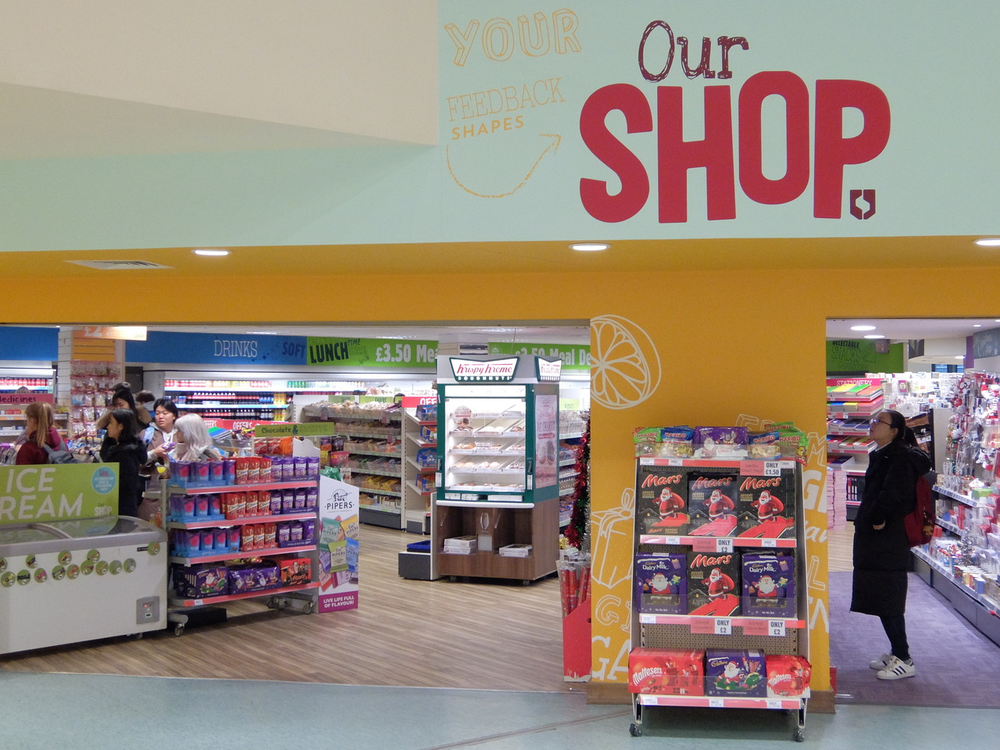
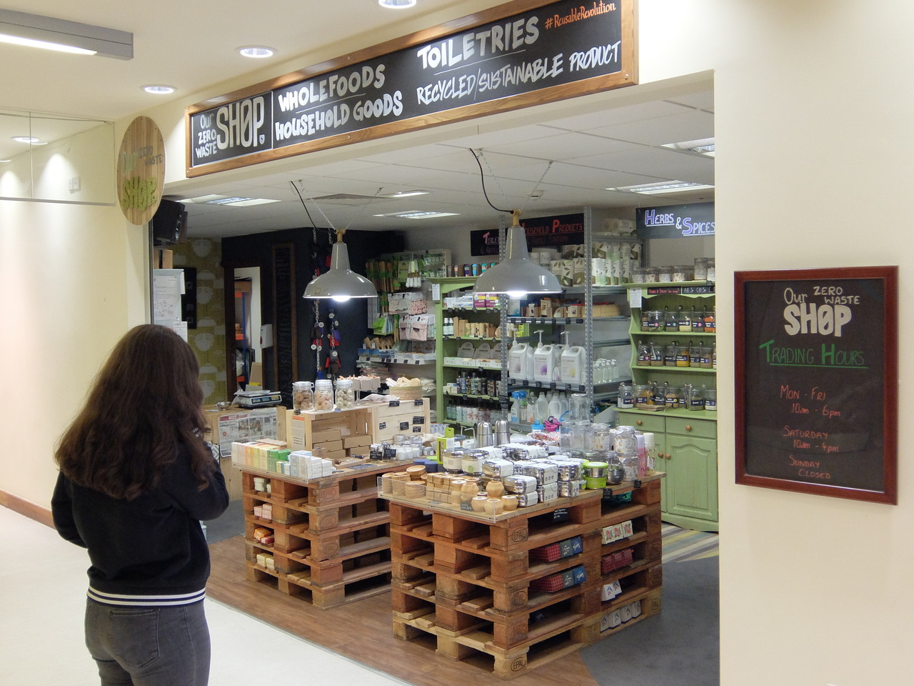
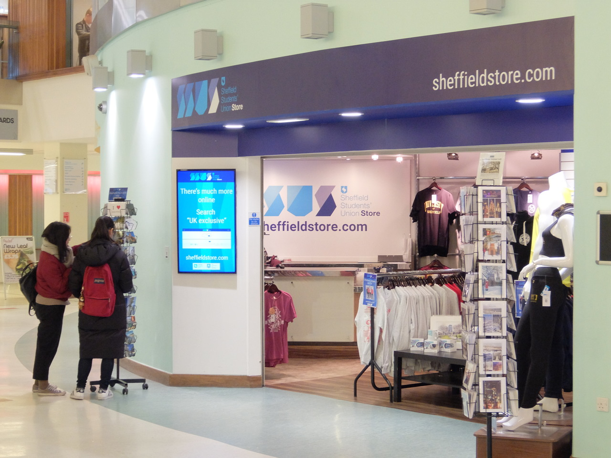
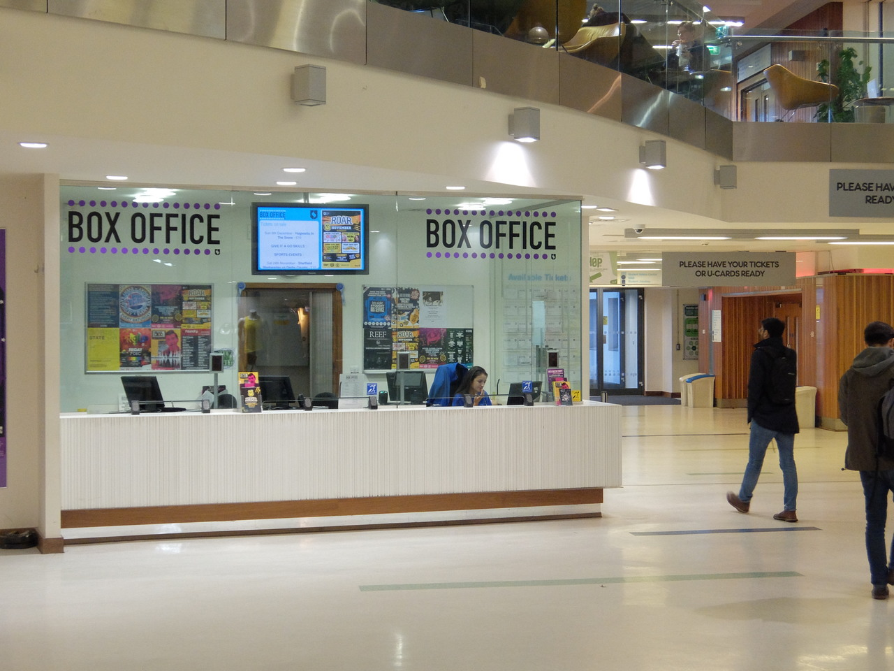

Shop
Shopping in the Students' Union
Around the Students' Union there are shops for your every need, selling snacks, toiletries, stationary and more; you will almost certainly be able to find that one thing you need in one of the Students' Union shops.
Our Shop
Our Shop is the main shop in the Students' Union, being basically a University corner shop, you
can get many items for your daily needs. Fancy trying something new and international? Our shop
has a brilliant international food section from all around the world and is definitely worth
trying.
Opening hours:
Term time: Mon-Fri 8:30am-7pm / Sat 10am-4pm / Sun 12pm-4pm
Holiday: Mon-Fri 9am-5pm / Sat-Sun Closed
Our Zero Waste Shop
Our Zero Waste Shop sells things like spices, herbs and nuts without any
packaging, so you can bring your own box or use one of their paper bags and
buy the exact amount you want. They have huge supplies of household items
like soaps and cleaning products; you can bring your empty bottles
and refill for cheaper than buying a new bottle.
Opening hours:
Term: Mon-Fri 8:30am-7pm / Sat 10am-4pm / Sun 12pm-4pm
Holiday: Mon-Fri 9am-5pm / Sat-Sun Closed
Sheffield Students' Union Store
Sheffield Students' Union Store sells The University of Sheffield themed
items, with engraved pens and university hoodies; if you want something
to commemorate your time at university, this is where you'll find it.
Opening hours:
Mon-Fri: 09:00-17:30
Sat: 12:00-16:00
Sun: Closed
Box Office
The Box Office is where you can go to find out information on events and buy event tickets. Tickets can be purchased from either the online shop or the physical shop in the Students' Union. Opening hours vary, so see the most up-to-date hours.
Santander
If you are with Santander then luckily for you there is a small branch of the bank inside
the Students' Union. There for all of your student banking needs, they are ready to help with
any problem, no matter how small.
Opening hours:
Mon-Fri: 10:00-18:00
Sat-Sun: Closed